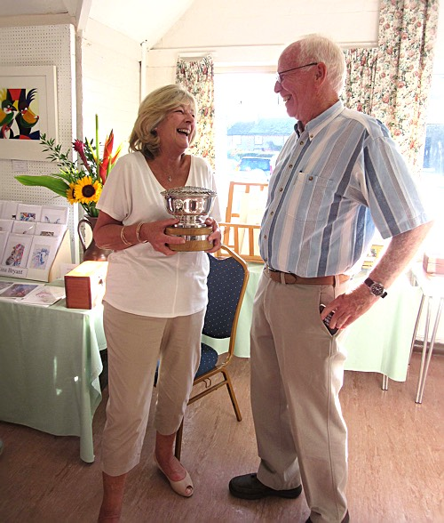

(Click here to go back to exhibition page)
The Exhibition of the Arun Art Society 2015 was held on 27th July thru 1st August, and Hagop Kasparian chose our winner, Caryl Smith, pictured below.

(Caryl Smith being presented with the Rose Bowl for best painting by
Hagop Kasparian)
(The winning painting - "Country Shadows" by Caryl Smith)